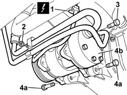
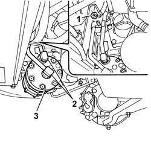

5040A20 AIR CONDITIONER COMPRESSOR - R+R - INCLUDES FLUID LEVEL CHECK AND TOP UP IF NECESSARY
- Path
- Procedures > 50 AUXILIARY UNITS > 5040 AIR CONDITIONING CASING AND COMPONENTS > 5040A CHECKING OPERATION OF AIR CONDITIONER (TEMPERATURE) > 5040A20 AIR CONDITIONER COMPRESSOR - R+R - INCLUDES FLUID LEVEL CHECK AND TOP UP IF NECESSARY
- Kind
- repair procedure (removal / refitting; the operation number is the code)
- Applies to
- engines: 2.0 16V, 2.8 JTD 8V; all production periods
- Interactive page
- https://sloeber94.github.io/elrnDB-fDct/en/#/244001266
Applies to: engines: 2.0 16V; all production periods
 Removing
Removing
 Refitting
Refitting- Disconnect the negative battery terminal.
Op. 0010T84 COOLANT FOR AIR CONDITIONING SYSTEM DEHYDRATE AND RECHARGE
Op. 7055B54 UNDER-ENGINE GUARD - R R
Op. 1092C11 POWER STEERING PUMP DRIVE BELT - R R FOR VERSIONS WITH AIR CONDITIONER
Op. 1092B40 AIR CONDITIONER COMPRESSOR/ALTERNATOR DRIVE BELT - R + R
1. Disconnect the electrical connection for the compressor.
2. Undo the nut fixing the pipe retaining bracket.
3. Undo the bolt fixing the pipe to the compressor and move it aside.
4. Undo the fixing bolts (4a) and remove the compressor (4b).

Applies to: engines: 2.0 16V; all production periods
Refitting
Removing- Fit the compressor in the housing on the support and tighten the fixing bolts.
- Tighten the bolt fixing the two high and low pressure pipes for the air conditioning system.
- Tighten the nut fixing the retaining bracket.
- Connect the electrical connection for the electro-magnet coupling.
Op. 1092B40 AIR CONDITIONER COMPRESSOR/ALTERNATOR DRIVE BELT - R + R
Op. 1092C11 POWER STEERING PUMP DRIVE BELT - R R FOR VERSIONS WITH AIR CONDITIONER
Op. 7055B54 UNDER-ENGINE GUARD - R R
Op. 0010T84 COOLANT FOR AIR CONDITIONING SYSTEM DEHYDRATE AND RECHARGE
- Connect the negative battery terminal.
Applies to: engines: 2.8 JTD 8V; all production periods
Removing
RefittingOp. 0010T84 COOLANT FOR AIR CONDITIONING SYSTEM DEHYDRATE AND RECHARGE
- Disconnect the negative battery terminal.
Op. 7055B54 UNDER-ENGINE GUARD - R R
Op. 1092D10 AIR CONDITIONER COMPRESSOR DRIVE BELT - R + R
1. Undo the nut fixing the compressor pipes to the mounting bracket.
2. Undo the connectors fixing the compressor pipes to the compressor.
- Undo the bolts fixing the compressor.
3. Remove the compressor.

Applies to: engines: 2.8 JTD 8V; all production periods
Refitting
Removing- Fasten the compressor to the mounting bracket tightening the bolts to the recommended torque.
 | Value - daNm | Fastening | Component | Ø |
|---|---|---|---|---|
. | (Rear) 4.2 | Bolt | AIR CONDITIONER ASSEMBLY COMPRESSOR | - |
| Value - daNm | Fastening | Component | Ø |
|---|---|---|---|---|
. | (Pulley side) 4.7 | Bolt | AIR CONDITIONER ASSEMBLY COMPRESSOR | - |
- Connect the supply and return pipes to the compressor tightening the connectors to the recommended torque.
| Value - daNm | Fastening | Component | Ø |
|---|---|---|---|---|
. | 4,0 | Connector | EXPANSION VALVE PIPE / COMPRESSOR (A.C.) | - |
| Value - daNm | Fastening | Component | Ø |
|---|---|---|---|---|
. | 4,0 | Connector | PIPE COMPRESSOR/CONDENSER (A.C.) | - |
- Fit the fan tightening the fixing bolts.
Op. 1092D10 AIR CONDITIONER COMPRESSOR DRIVE BELT - R + R
Op. 7055B54 UNDER-ENGINE GUARD - R R
- Connect the negative battery terminal.
Op. 0010T84 COOLANT FOR AIR CONDITIONING SYSTEM DEHYDRATE AND RECHARGE
Topics linked from this page (5)
- 0010T84 COOLANT FOR AIR CONDITIONING SYSTEM DEHYDRATE AND RECHARGE
- 1092B40 AIR CONDITIONER COMPRESSOR/ALTERNATOR DRIVE BELT - R + R
- 1092C11 POWER STEERING PUMP DRIVE BELT - R R FOR VERSIONS WITH AIR CONDITIONER
- 1092D10 AIR CONDITIONER COMPRESSOR DRIVE BELT - R + R
- 7055B54 UNDER-ENGINE GUARD - R R